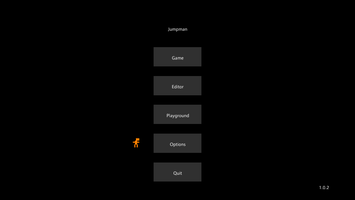
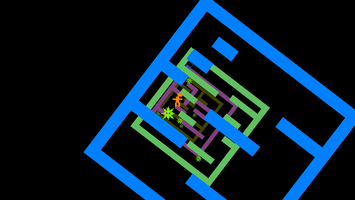
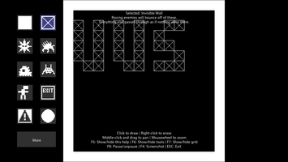

Jumpman
Dieser Artikel wurde für die folgenden Ubuntu-Versionen getestet:
Ubuntu 14.04 Trusty Tahr
Zum Verständnis dieses Artikels sind folgende Seiten hilfreich:
Jumpman  ist ein Geschicklichkeitsspiel mit minimalistischer Grafik, aber einem fesselnden Spieleerlebnis. Ziel des Spiels ist es, den Ausgang des jeweiligen Levels lebend zu erreichen. Der Spieler ist vollkommen unbewaffnet und muss Feinden geschickt ausweichen. Eigene Level können mit dem integrierten Level-Editor erstellt und an den Entwickler übermittelt werden.
ist ein Geschicklichkeitsspiel mit minimalistischer Grafik, aber einem fesselnden Spieleerlebnis. Ziel des Spiels ist es, den Ausgang des jeweiligen Levels lebend zu erreichen. Der Spieler ist vollkommen unbewaffnet und muss Feinden geschickt ausweichen. Eigene Level können mit dem integrierten Level-Editor erstellt und an den Entwickler übermittelt werden.
Jumpman kann mit einem Controller oder der Tastatur gespielt werden.
|  |  |
| Menü | Spielszene |
Installation¶
Von der Projektseite oder von holarse-linuxgaming.de  das Archiv Jumpman_lin.tar.gz herunterladen und entpacken [1] (z.B. nach ~/Spiele/). Im nächsten Schritt in den Ordner Jumpman wechseln und das Spiel über
das Archiv Jumpman_lin.tar.gz herunterladen und entpacken [1] (z.B. nach ~/Spiele/). Im nächsten Schritt in den Ordner Jumpman wechseln und das Spiel über Jumpman starten [2].
Auf Wunsch einen Menüeintrag [3] vornehmen.
|  |
| Editor |
Editor¶
Über den ins Spiel integrierten Editor können eigene Kreationen erschaffen werden. Felder werden mit der Maus ausgewählt,  hinzugefügt oder wieder
hinzugefügt oder wieder  entfernt.
entfernt.
Zusatzlevel¶
In der Jumpman Level Database können Zusatzlevel, welche von anderen Spielern erstellt worden sind, heruntergeladen werden. Das gewünschte .zip-Archiv in das Installationsverzeichnis entpacken [1] und nach dem Spielstart den Menüpunkt "Editor" aufrufen. Der Eintrag des neuen Levels ist hier zu finden.
Tastenkürzel¶
| Tastenkürzel | |
| Taste(n) | Funktion |
| A / D | Spielebene drehen |
| ← / → | Gehen |
| Sprung | |
| Esc | Menü |
| F1 | Steuerung ändern |
| F4 | Bildschirmfoto aufnehmen - diese werden im Installationsverzeichnis unter Screenshots im Format png abgespeichert. |

Infobox¶
| Jumpman | |
| Genre: | Arcade |
| Sprache: | |
| Veröffentlichung: | 2009 |
| Entwickler: | Andi McClure |
| Systemvoraussetzungen: | - |
| Medien: | Download |
| Strichcode / EAN / GTIN: | - |
| Läuft mit: | nativ |
- Erstellt mit Inyoka
-
 2004 – 2017 ubuntuusers.de • Einige Rechte vorbehalten
2004 – 2017 ubuntuusers.de • Einige Rechte vorbehalten
Lizenz • Kontakt • Datenschutz • Impressum • Serverstatus -
Serverhousing gespendet von